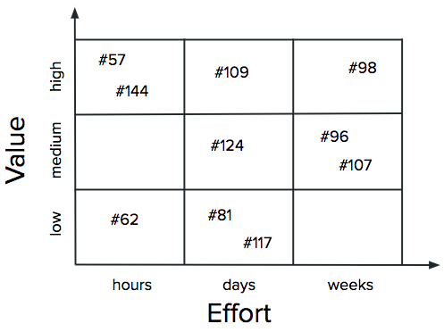
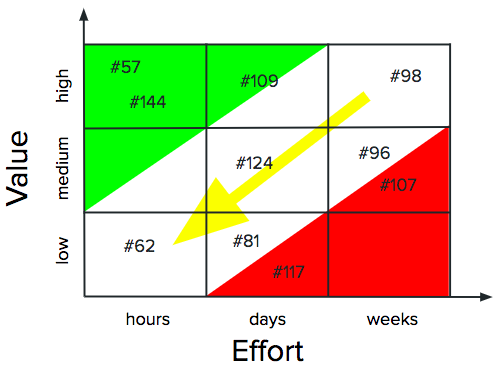
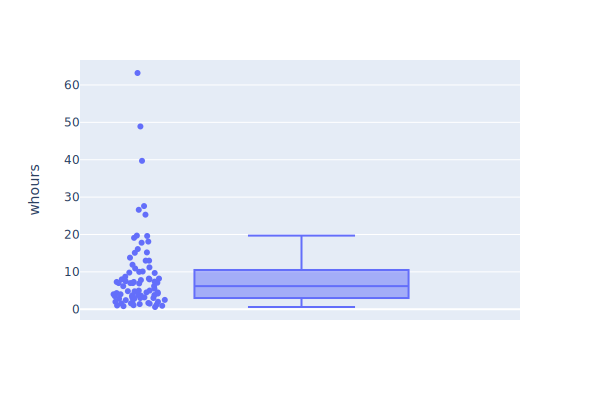

Project Management
What It Is
- The project manager manages the schedule
- Who is doing what?
- When do we cut it and do something smaller?
Feedback Loops
- It's all about timescales
Analysis & Estimation
- Sticky notes on a whiteboard
- Lots of discussion

Analysis & Estimation
- Sticky notes on a whiteboard
- Lots of discussion

Status Updates
- Three-column table in a Google Doc for each weekly meeting
| Person | Progress | Plans | Discussion |
|---|---|---|---|
| Ren |
|
|
|
| Mikka |
|
|
|
| Sanjay |
|
|
|
| Jess |
|
|
|
- Anyone can highlight items they want discussed
Productivity
- [Prechelt2000] programmers implement the same thing in the language of their choice
- How long did it take?

Productivity
- Shortest and longest times were 0.6 and 63 hours
- Ratio is 150X (!)
- But people used 7 different languages
- If we only look at Java, times are 3.8 vs. 63 hours (17X)
- But comparing best and worst exaggerates differences
- 90th percentile vs. 50th gives 3.7X
Findability
- Make them the same in all repositories
| Group | Label | Meaning |
|---|---|---|
| Challenge | bug report | Something isn't working |
| feature request | Something more is needed | |
| question | Can you please explain… | |
| Response | cleanup | Tidying up |
| enhancement | Adds something new | |
| discussion | Question or proposal | |
| fix | Fixes a problem | |
| Kind | design | User interface |
| code | In the software | |
| docs | In the documentation | |
| test | Because quality | |
| release | Packaging and publication | |
| Misc | good first issue | Good for newcomers |
| task | An instance of a checklist |
In Progress
- What do you expect each of your colleagues to deliver this week?
- What do they expect you to deliver?
- What roadblocks do they face?
- How much of this could you discover without talking to them?